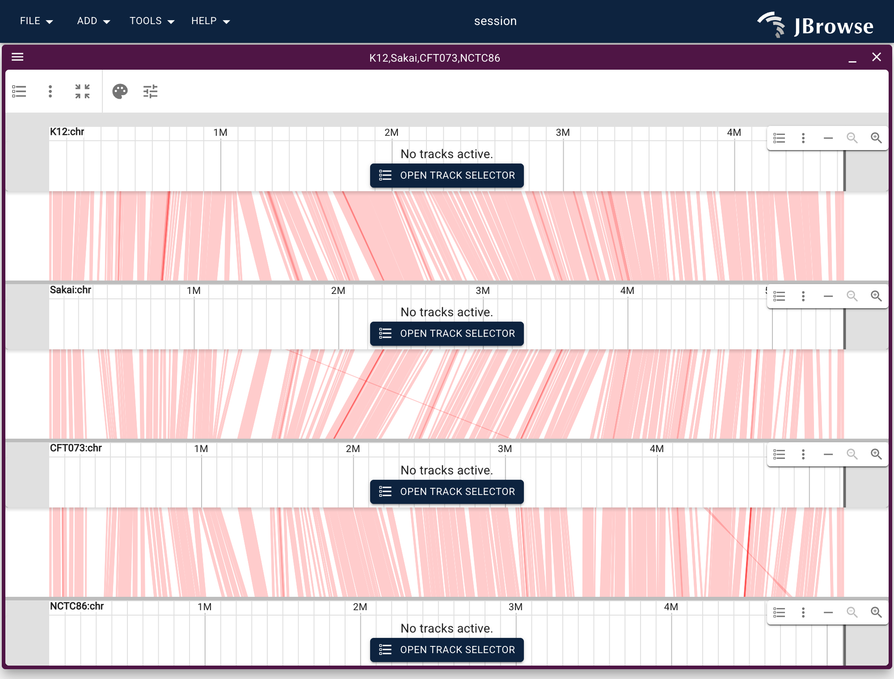
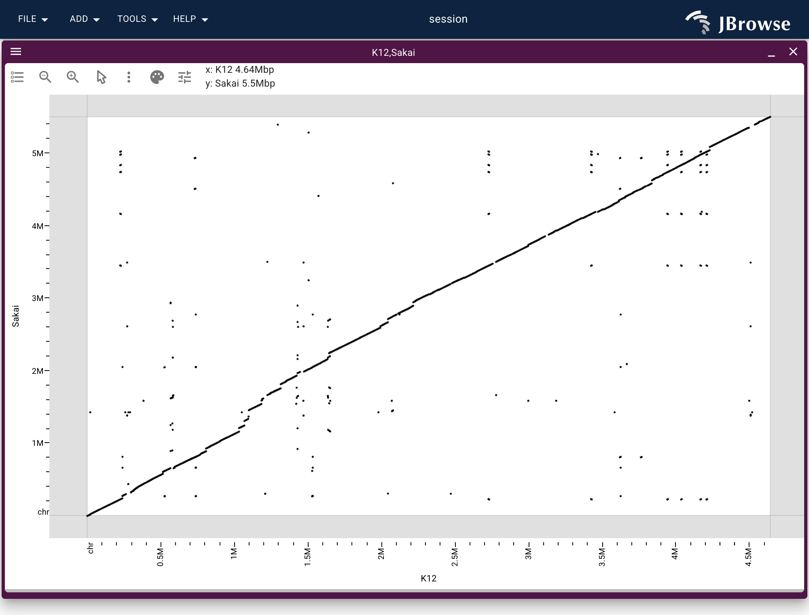

Comparing genomes: linear synteny and dotplots
Source:vignettes/comparative-synteny.Rmd
comparative-synteny.RmdJBrowseR() renders a single linear genome view. For
comparative genomics — several genomes stacked, the blocks each pair
shares drawn between the rows — JBrowseRApp() drives the
full app from a declarative views list, where each entry
can be a linear_view(), a synteny_view(), or a
dotplot_view().
This vignette stacks four E. coli strains (K12, Sakai, CFT073, NCTC86) tied together by one all-vs-all minimap2 alignment — the same hosted data as the JBrowse all-vs-all synteny tutorial.
The website hosts the same views
as live widgets, and everything here also runs on Colab’s R runtime:

Describe the four assemblies
An assembly is the flat list(name = , uri = ) shorthand
JBrowse expands itself — it picks the adapter from the extension and
derives the .fai/.gzi index locations, so the
URL is all you write. (assembly() is the same thing with
the name defaulted from the file.)
One all-vs-all track between them
A single AllVsAllPAFAdapter track serves every pair from
one PAF file. It spans all four assemblies, so
synteny_track() (which builds the two-assembly PAF case)
does not apply — write the track config as a plain list, the same JSON a
JBrowse config file would hold.
Stack them in a synteny view
synteny_view() takes the assembly names top-to-bottom.
The four rows have three gaps between adjacent pairs, and each gap draws
the same all-vs-all track, so tracks is that trackId once
per gap. draw_curves = FALSE draws straight ribbons;
min_alignment_length hides short, noisy blocks.
app <- JBrowseRApp(
assemblies = assemblies,
tracks = list(ecoli_ava),
views = list(
synteny_view(
as.list(strains),
tracks = list(list("ecoli_ava"), list("ecoli_ava"), list("ecoli_ava")),
drawCurves = FALSE,
minAlignmentLength = 10000
)
)
)
app
In the console this opens a browser tab; in R Markdown it renders
inline; in Shiny, pair JBrowseROutput() with
renderJBrowseR().
The same PAF as a dotplot
Any one pair opens whole-genome as a dotplot — the long diagonal is the shared backbone, off-diagonal segments are rearrangements.
JBrowseRApp(
assemblies = assemblies[1:2],
tracks = list(ecoli_ava),
views = list(dotplot_view(list("K12", "Sakai"), tracks = list("ecoli_ava")))
)
Building the PAF from your own genomes
The hosted all_vs_all.paf.gz comes from concatenating
the strains (each contig PanSN-named sample#1#contig) and
running minimap2 -c -x asm20 --eqx all pairs. The tutorial
walks through generating it and loading per-strain gene tracks
alongside.